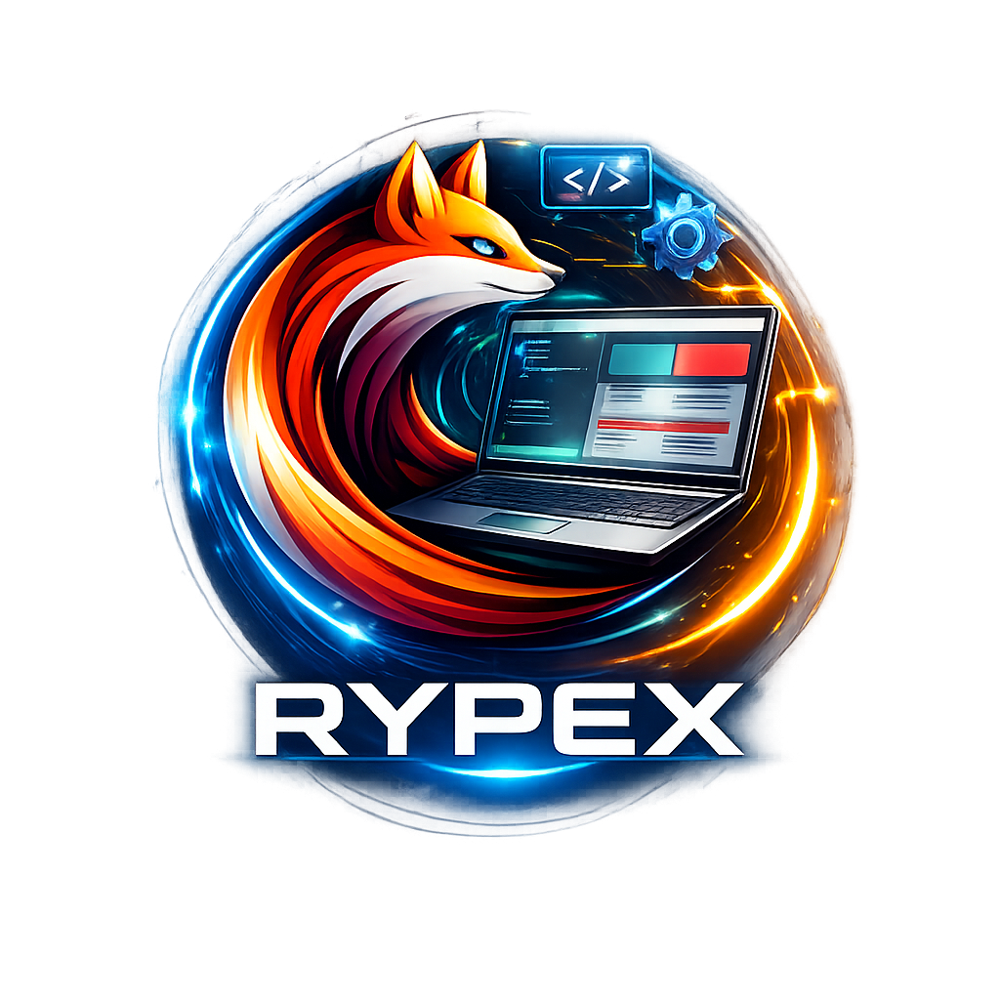
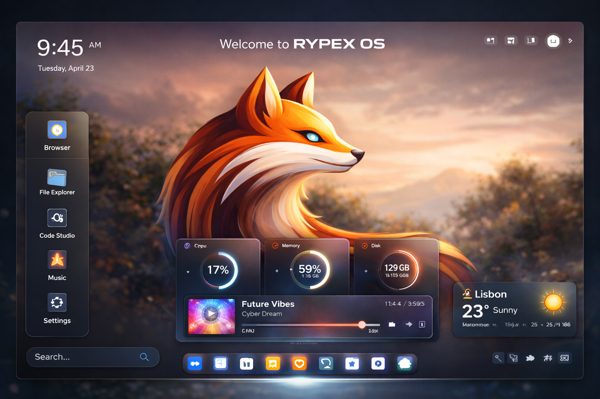

Rypex LabsRypex OS é um sistema operacional criado para redefinir a forma como interagimos com a tecnologia. Com alto desempenho, segurança avançada e uma interface moderna, ele foi projetado para oferecer uma experiência única, unindo eficiência, inteligência e o futuro da computação em um só lugar.

Desenvolvo sites modernos e profissionais, com foco em design e desempenho. Também trabalho na criação do Rypex OS, um sistema operacional voltado para inovação, eficiência e novas experiências digitais.
Alguns dos projetos que desenvolvo, focados em tecnologia, inovação e criação de soluções digitais modernas.
Rypex OS
Um sistema operacional em desenvolvimento, criado com foco em desempenho, eficiência e uma nova experiência de uso, unindo design moderno com tecnologia avançada.
Desenvolvimento Web
Criação de sites profissionais, responsivos e modernos, com foco em performance, design e experiência do usuário.
Projetos Experimentais
Exploração de novas ideias, interfaces e tecnologias, buscando inovação tanto no desenvolvimento web quanto em sistemas.
Email: viniciusnonatocardosotavares@gmail.com
Telefone: (55) 91 99101-4140